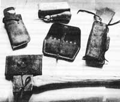

If you own any leather goods at all-sandals, handbags, watchbands, or whatever-here's one handy homestead tool you can't afford to be without, according to Ron Prince of Eureka, Montana.
Let's say you want to repair a rip in your tent . . . or fix a pair of old hiking boots . . . or make a leather slipcase for your sunglasses. You could go about the job armed with a stout needle and some strong thread . . . but that's the hard way to do leather and canvas work. A much easier way would be to use a handy little device known as a sewing awl.
Perhaps-like me-you've seen ads for these tiny hand-held leather stitchers before and wondered if they work, but you've always been hesitant to send away for one and find out. Well, hesitate no further . . . because these little jewels do indeed work. And I can't recommend 'em too highly.
I bought my sewing awl-a Speedy Stitcher-from L.L. Bean, Inc. (Freeport, Maine 04033), a bit more than a year ago, at the ridiculously low price of $2.20 postpaid . . . and I consider mine to be an especially nice model. It came with: [1] a handsomely designed, comfortable wooden handle, [2] two different sizes of needles, [3] a bobbin to hold the nylon thread, and [4] an adequate set of instructions. (Incidentally, the Speedy Stitcher's bobbin is enclosed in the handle-making the whole unit quite compact-but other brands feature exposed bobbins and storage space for extra needles inside the handle. Both types of awls perform well.)
How does the tool work? The sewing awl makes a lock stitch, just like a regular sewing machine . . . but the awl can take on heavy-duty materials-such as leather and canvas-that the sewing machine can't. (Even if your Singer could handle the heavy stuff, chances are you couldn't take it to the barn to mend a canvas bag or fix some leather breeching. And the regular sewing machine certainly won't fit in your backpack!)
The instructions that come with the awl are pretty clear on how to make a stitch, but they gloss over a couple of points that I feel are pretty important. Number one, when you make something from scratch you must have access to both sides of the material. (That may not sound like an important point to you now . . . but wait until you try to make something fancy, like a pair of moccasins!) Number two, even though it's easy to make a basic stitch with the tool, the neatness of your final product will depend to a great extent on your dexterity and attention to detail.
Mind you, I'm not into fancy, creative leatherwork and I don't own any leatherworking tools other than my awl. The Speedy Stitcher simply fills a functional niche in my life. I use it (along with such common household items as single-edge razor blades, scissors, pencils and pens, and a straight-edge) to make things I need and repair articles I don't have the money to replace.
And I've made-or repaired-quite a few items with my stitcher over the past year and a half or so. I still hike, for instance, in some boots that I've repaired twice with my little awl . . . and-thanks to this nifty tool (I refuse to call it a "gadget")-I've been able to make axe and knife sheaths, protective covers for my sharpening stones, eyeglass cases, and a slew of different-sized pouches. And I've only begun to explore the sewing awl's possibilities!
If you're just starting to use one of these tools, a good first project might be to make a leather carrying case (such as the one offered by L. L. Bean for $2.75) in which to keep your stitcher, extra needles, thread, and/or other goodies. (Speaking of needles and thread, you'd be wise to purchase extras . . . because you'll soon need 'em, once you get "hooked" on handstitching!)
Leather bags and pouches are easy to make, when you have a sewing awl. You'll find that such containers are great for storing nails, screws, and other sharp objects, because they don't tip over (or break) easily. (And with a drawstring, they're easy to tote, too!)
Be prepared to think differently about that old pair of boots you were going to throw away . . . or that ripped tent you were going to fix "someday" . . . or any other leather (or canvas) item you've been meaning to repair. Because chances are, with the aid of your trusty sewing awl you'll be able to make these things as good as new again . . . or you'll at least be able to salvage the leather and turn it into something beautiful!
|
 |
|
|